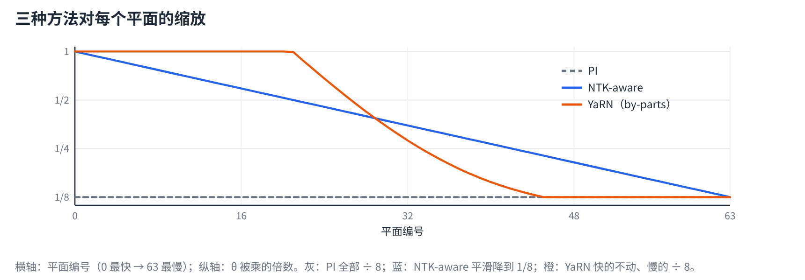
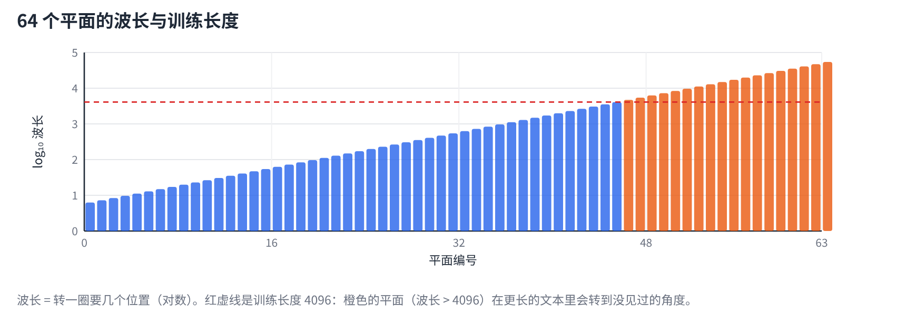
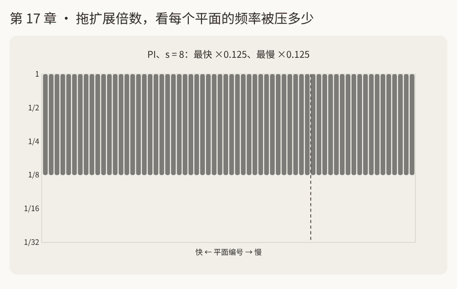

第 17 章 · 长文本外推：PI → NTK-aware → YaRN
本地运行
git clone https://github.com/wikieden/beyond-transformer
cd beyond-transformer/code/notebooks
pip install jupyterlab torch numpy
jupyter lab ch17_long_context.ipynb也可以下载后直接用 VS Code 打开 .ipynb 运行。需要 GPU 的章节在 Colab 里选「代码执行程序 → 更改运行时类型 → GPU」。
本章回答：一个用 RoPE、在 4096 个 token 上训练的模型，直接读 32768 个 token 为什么会崩？位置插值（PI）把位置“压”回训练范围，代价是什么？NTK-aware 为什么改的是底数？YaRN 的“按波长分段”在区分什么，最后那个注意力温度又是干什么的？
讲解日期：2026-11-26 · 上一章：第 16 章 ALiBi 与 NoPE · 下一章：第 18 章 训练稳定性
对应原文：Position Interpolationtransformer-deep-dive/materials/text/papers/position-interpolation-2306.15595.txt摘要 L16–L27、Figure 1 L78–L93（没见过的位置 vs 压回来的位置）、§2 L239（ã(s) = a(Ls/L′)）；YaRNyarn-2309.00071.txt波长 式 (8) L141–L146、NTK-aware L196–L207 与附录 式 (19)–(22) L691–L737（b′ = b·s^{|D|/(|D|−2)}）、NTK-by-parts §3.2 L209–L283（r = L/λ，α = 1、β = 32）、注意力温度 式 (15) L305–L324（√(1/t) = 0.1 ln s + 1）与 L751（s = 8 时 ≈ 1.208）
本章缩写：PI = Position Interpolation（位置插值）；NTK = Neural Tangent Kernel（神经正切核，这里只是方法的名字来源）；YaRN = Yet another RoPE extensioN method（又一种 RoPE 扩展方法）；s = 扩展倍数（新长度 / 训练长度）；L = 训练时的上下文长度；b = RoPE 的底数（10000）；λ = 波长（一个平面转一圈要几个位置）；r = L/λ（训练长度里这个平面转了几圈）；t = 注意力温度。全部缩写见 附录 · 缩写与术语表
讲解
第一步：问题：最慢的平面转到了没见过的角度（2026-11-26）
类比：一只只在 0 到 12 点之间看过的钟。 训练时，RoPE 最慢的那几个平面在 4096 个位置里只转了很小一段角度；读到 32768 时，它们转到了训练时从没出现过的角度，模型不知道这些角度意味着什么。
数字演示（d = 128、底数 10000、训练长度 4096、要读 32768，s = 8）：
| 最慢平面转过的角度 | |
|---|---|
| 训练时（0 到 4096） | 0.473 弧度 |
| 直接外推到 32768 | 3.784 弧度（没见过） |
快的平面没有这个问题：最快的平面在训练长度里已经转了 650 多圈，所有角度都见过。问题只在慢的平面（第 15 章的波长表：慢平面转一圈要几万个位置）。
一句话：RoPE 直接外推时，波长比训练长度还长的那些平面会转到训练时没见过的角度，模型就崩了。
第二步：PI：把位置压回训练范围（2026-11-26）
类比：把 32 小时的录像按 8 倍速放进 4 小时的时间轴。
PI（§2，L239）：所有位置除以 s，ã(m) = a(m·L/L′)，也就是 m → m/s。32768 个位置被压回 0 到 4096，最慢平面最多转 0.473 弧度，又回到见过的范围。再用很少的数据微调（1000 步以内，摘要 L16–L27）就能用到 32768。
代价：所有平面都慢了 s 倍，包括最快的。最快平面相邻两个位置的角度差从 1 弧度变成 0.125 弧度，相邻的词变得更难区分（“分辨率”掉了）。
| 最快平面相邻位置的角度差 | 最慢平面在新长度内转过的角度 | |
|---|---|---|
| 不处理 | 1.000 | 3.784（没见过） |
| PI（÷ 8） | 0.125（分辨率掉了 8 倍） | 0.473（见过） |
一句话：PI 把所有位置除以 s，慢平面回到见过的角度，但快平面的分辨率也跟着掉了 s 倍。
第三步：NTK-aware：改底数，快的不动、慢的压慢（2026-11-26）
能不能只压慢平面、不动快平面？NTK-aware（L196–L207；附录式 19，L711）改的是 RoPE 的底数：
θ_i = b^{−2i/d}，换了底数后，最快的平面（i = 0）θ₀ = 1 不变；最慢的平面（i = d/2 − 1）正好慢了 s 倍；中间的按指数平滑过渡。
数字演示（s = 8、d = 128）：底数 10000 → 82,685；最快平面 θ = 1.000 不变；最慢平面 1.15 × 10⁻⁴ → 1.44 × 10⁻⁵（÷ 8.00）。
缺点（L202–L207）：哪个底数最好很难定，实际要比理论值再大一些；中间那些平面压多少是“顺带”的，没有专门考虑。
一句话：NTK-aware 把底数乘 s^{d/(d−2)}：最快平面不变，最慢平面慢 s 倍，中间平滑过渡。
第四步：YaRN：按波长分三段处理，再加温度（2026-11-26）
NTK-by-parts（§3.2，L209–L283）：看每个平面在训练长度里转了几圈 r = L/λ：
- r > β（转了很多圈）：这个平面的所有角度早都见过，不动；
- r < α（连一圈都没转完）：这个平面在新长度里会转到没见过的角度，完全插值（θ/s，同 PI）；
- 中间：线性过渡。
Llama 系列取 α = 1、β = 32（L283）。
数字演示（d = 128、训练长度 4096、s = 8）：
| 平面 | 波长 λ | 训练长度里转了 r 圈 | 处理 | θ 乘 |
|---|---|---|---|---|
| 0 | 6.3 | 651.9 | 不动 | 1.000 |
| 16 | 62.8 | 65.2 | 不动 | 1.000 |
| 24 | 198.7 | 20.6 | 过渡 | 0.679 |
| 32 | 628.3 | 6.5 | 过渡 | 0.281 |
| 40 | 1986.9 | 2.1 | 过渡 | 0.155 |
| 48 | 6283.2 | 0.65 | 完全插值 | 0.125 |
| 63 | 54410.1 | 0.08 | 完全插值 | 0.125 |
快平面完全保住了近处的分辨率，慢平面完全回到见过的角度。
注意力温度（式 15，L305–L324）：插值后，同样内容的 q·k 分布变了，softmax 变得“不够尖”。YaRN 把 logits 乘一个系数：
s = 8 时 ≈ 1.2079（L751 的 1.208），s = 32 时 1.3466。实现上直接把 cos、sin 表乘这个数，不改注意力代码。
YaRN = NTK-by-parts + 温度。论文用 0.1% 左右的预训练数据微调就把 Llama 2 扩到 64k、128k（L80）。

图 17-1 · 横轴是平面编号（0 最快 → 63 最慢），纵轴是 θ 被乘的倍数（对数）。灰：PI，全部 ÷ 8；蓝：NTK-aware，从 1 平滑降到 1/8；橙：YaRN 的 NTK-by-parts，快的平面不动、慢的 ÷ 8、中间线性过渡
图 17-2 · 64 个平面的波长（对数纵轴）。红虚线是训练长度 4096：波长比它短的平面在训练里转满了圈，所有角度都见过；比它长的（右边）才需要插值场景代码：Hugging Face 里给 Llama 配 YaRN（真实写法，配置字段名照 transformers 的 rope_scaling；本书 chapter-code 只用 NumPy，这段没跑过）：
config.rope_scaling = {"rope_type": "yarn", "factor": 8.0,
"original_max_position_embeddings": 4096,
"beta_fast": 32, "beta_slow": 1} # 对应 β = 32、α = 1
model = AutoModelForCausalLM.from_pretrained(name, config=config)
在小模型上比较 RoPE 直接外推、PI、YaRN 的 loss 随长度的变化，是里程碑 T-M3。
一句话：YaRN 按“训练长度里转了几圈”把平面分成不动、过渡、完全插值三段，再把 logits 乘 0.1 ln s + 1。
动画演示：拖扩展倍数，看每个平面被压多少

可交互版：animations/17-long-context.html（下拉：PI / NTK-aware / YaRN；滑块：扩展倍数 s）。
怎么看：
- 64 根柱子是 64 个平面 θ 被乘的倍数（第二到四步）；
- 红线左边的平面在训练长度里转满了圈，右边的没有；
- PI 一刀切；NTK-aware 平滑过渡；YaRN 左边完全不动、右边完全插值。拖大 s，右上角的温度跟着变。
练习与作答记录
题 1（第二步）：训练长度 2048，要读 16384，用 PI，位置 10000 会被映射到哪个位置？最快平面相邻两个位置的角度差变成多少（原来是 1）？
题 2（第三步）：d = 64、s = 4，NTK-aware 的新底数是多少？（提示：4^{64/62} ≈ 4.18）
题 3（第四步）：一个平面的波长是 1000，训练长度 4096，α = 1、β = 32，按 NTK-by-parts 它属于哪一段？θ 乘多少（s = 8）？
口诀
只见过半圈的慢钟，读长了转到没见过的角度。
PI 位置除以 s，慢的回来、快的也糊了。
NTK 改底数，快的不动、慢的压慢。
YaRN 看转了几圈：转满三十二圈不动，不到一圈全插值，中间线性过渡；再乘零点一 ln s 加一的温度。
本章复习卡片
必背：B46–B47（B46 直接外推为什么崩、PI 和 NTK-aware；B47 YaRN 的分段与温度）。练习做完后，按答错、卡住的地方再补。
附录 · 延伸阅读
留给以后深入学习用，不影响本章主线。★ 是建议先读的。
推荐阅读
| 读什么 | 读哪里 | 读它为了什么 |
|---|---|---|
| ★ Extending Context Window via Positional Interpolation（Chen 等 2023） | 摘要 L16–L27；Figure 1 L78–L93；§2 | PI 的想法和效果 |
| ★ YaRN（Peng 等 2023） | §3.1–§3.3 L134–L324；附录 L691–L751 | NTK-aware、by-parts、温度 |
| 本书 第 15 章 RoPE | 频率与波长 | 本章的前提 |
| 《数学与实验统计》第 38 章 位置编码 | PI / NTK / YaRN 一节 | 同一问题的数学账 |
| 第 24 章（LLaMA 3 的长上下文续训） | §3.4.2 | 工业上怎么分阶段拉长上下文 |
数学原理
- 见过的角度：平面 i 在训练中转过 L·θ_i 弧度；L·θ_i < 2π（r < 1）时，新长度会带来没见过的角度。
- NTK-aware 的指数：要最慢平面 θ_{d/2−1} = b^{−(d−2)/d} 慢 s 倍，需 b′^{(d−2)/d} = s·b^{(d−2)/d}，即 b′ = b·s^{d/(d−2)}。
- by-parts 的插值：θ′ = (1 − γ)θ/s + γθ，γ = clip((r − α)/(β − α), 0, 1)。
- 温度：logits × √(1/t) 等于把 q、k 各乘 (1/t)^{1/4}，可以直接乘进 cos、sin 表。
公式清单
| 公式 | 意思 |
|---|---|
| \(m \to m/s\) | PI |
| \(b' = b\cdot s^{d/(d-2)}\) | NTK-aware |
| \(r = L/\lambda\)，\(\lambda = 2\pi/\theta\) | 训练长度里转了几圈 |
| \(\theta' = (1-\gamma)\theta/s + \gamma\theta\) | NTK-by-parts |
| \(\sqrt{1/t} = 0.1\ln s + 1\) | YaRN 的注意力温度 |
代码对照：把本章的数字用代码算一遍
NumPy。代码在仓库本地
beyond-transformer/solutions/chapter-code/ch17_long_context.py，配套测试tests/test_ch17.py，notebook 在notebooks/ch17_long_context.ipynb：
bash cd beyond-transformer/solutions/chapter-code uv run python ch17_long_context.py uv run pytest tests/test_ch17.py
讲义 ↔ 代码：
| 讲义 | 公式 | 写法 | 跑出来 |
|---|---|---|---|
| 第一步 没见过的角度 | m·θ_min | angle_range(...) |
0.473 → 3.784 |
| 第二步 PI | θ/s | angle_range(32768, th / 8) |
回到 0.473 |
| 第三步 NTK-aware | b·s^{d/(d−2)} | ntk_base(8) |
82,685；最慢 ÷ 8 |
| 第四步 YaRN | by-parts + 温度 | by_parts(8)、yarn_temp(8) |
三段；1.2079 |
关键几行：
return base * s ** (d / (d - 2)) # NTK-aware 的新底数
r = L / wavelength(d, base) # 训练长度里转了几圈
gamma = np.clip((r - alpha) / (beta - alpha), 0, 1) # 0：全插值，1：不动
return (1 - gamma) * th / s + gamma * th # NTK-by-parts
代码里才看得到的 2 件事：
- 只改 θ，不碰模型：三种方法都只改 RoPE 的频率表（和一个温度），权重一点不动；所以能直接用在推理上，微调只是让效果更好。
- 这里只算频率：在模型上测不同长度的 loss、看谁先崩，是里程碑 T-M3。
自己改一改（不影响练习答案）：
- 把
by_parts的 β 从 32 改成 8，“不动”的平面多了还是少了？ - 把训练长度 L 改成 32768（LLaMA 3 续训后的长度），s = 4 时哪些平面还需要插值？